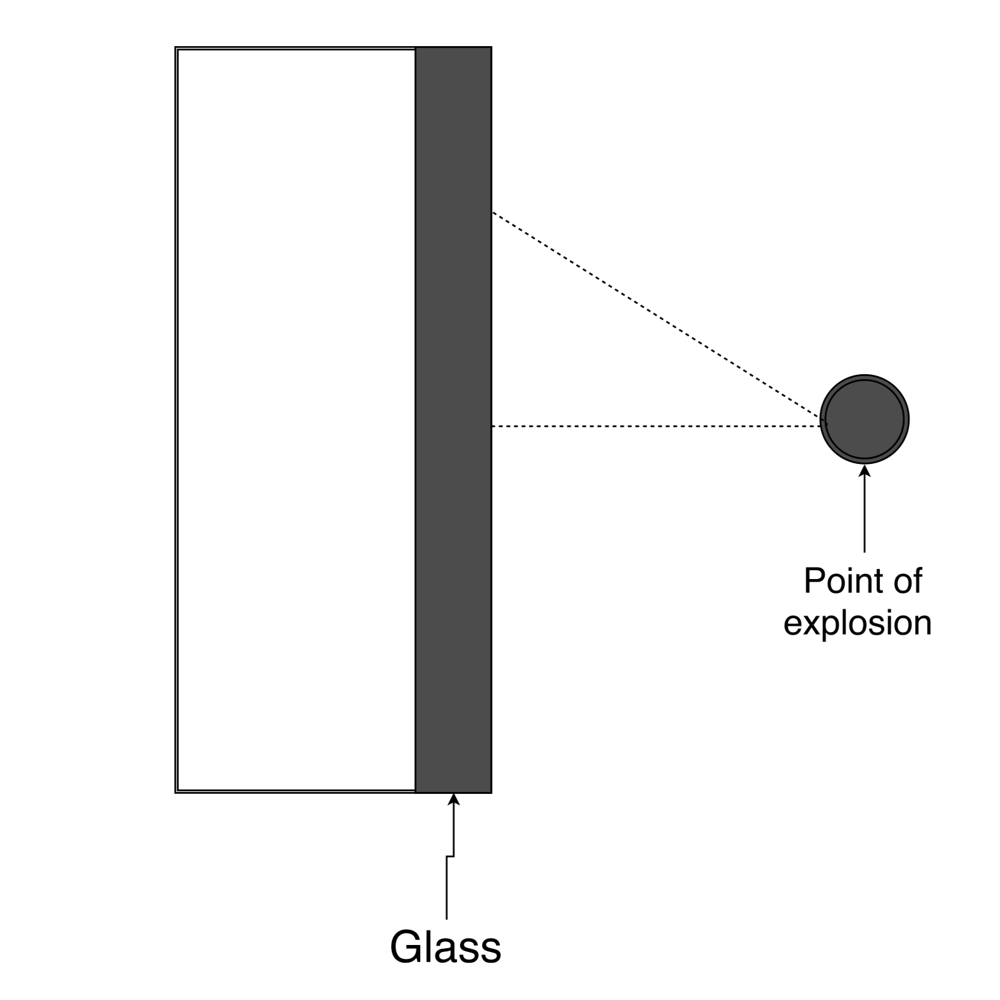
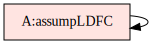
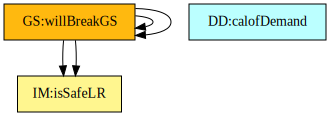

Software Requirements Specification for GlassBR
Nikitha Krithnan and W. Spencer Smith
Table of Contents
An outline of all sections included in this SRS is recorded here for easy reference.
- Table of Contents
- Reference Material
- Introduction
- Stakeholders
- General System Description
- Specific System Description
- Requirements
- Likely Changes
- Unlikely Changes
- Traceability Matrices and Graphs
- Values of Auxiliary Constants
- References
- Appendix
Reference Material
This section records information for easy reference.
Table of Units
The unit system used throughout is SI (Système International d’Unités). In addition to the basic units, several derived units are also used. For each unit, the Table of Units lists the symbol, a description, and the SI name.
| Symbol | Description | SI Name |
|---|---|---|
| \({\text{kg}}\) | mass | kilogram |
| \({\text{m}}\) | length | metre |
| \({\text{N}}\) | force | newton |
| \({\text{Pa}}\) | pressure | pascal |
| \({\text{s}}\) | time | second |
Table of Units
Table of Symbols
The symbols used in this document are summarized in the Table of Symbols along with their units. The symbols are listed in alphabetical order.
| Symbol | Description | Units |
|---|---|---|
| \(a\) | Plate length (long dimension) | \({\text{m}}\) |
| \(\mathit{AR}\) | Aspect ratio | – |
| \({\mathit{AR}_{\text{max}}}\) | Maximum aspect ratio | – |
| \(B\) | Risk of failure | – |
| \(b\) | Plate width (short dimension) | \({\text{m}}\) |
| \(\mathit{capacity}\) | Capacity or load resistance | \({\text{Pa}}\) |
| \({d_{\text{max}}}\) | Maximum value for one of the dimensions of the glass plate | \({\text{m}}\) |
| \({d_{\text{min}}}\) | Minimum value for one of the dimensions of the glass plate | \({\text{m}}\) |
| \(E\) | Modulus of elasticity of glass | \({\text{Pa}}\) |
| \(g\) | Glass type | – |
| \(\mathit{GTF}\) | Glass type factor | – |
| \(h\) | Minimum thickness | \({\text{m}}\) |
| \(\mathit{interpY}\) | InterpY | – |
| \(\mathit{interpZ}\) | InterpZ | – |
| \(\mathit{isSafeLoad}\) | Load resistance safety requirement | – |
| \(\mathit{isSafeLR}\) | 3 second load equivalent resistance safety requirement | – |
| \(\mathit{isSafePb}\) | Probability of glass breakage safety requirement | – |
| \(\mathit{isSafeProb}\) | Probability of failure safety requirement | – |
| \(J\) | Stress distribution factor (Function) | – |
| \({J_{\text{max}}}\) | Maximum value for the stress distribution factor | – |
| \({J_{\text{min}}}\) | Minimum value for the stress distribution factor | – |
| \({J_{\text{tol}}}\) | Tolerable stress distribution factor | – |
| \(k\) | Surface flaw parameter | \(\frac{\text{m}^{12}}{\text{N}^{7}}\) |
| \(\mathit{LDF}\) | Load duration factor | – |
| \(\mathit{Load}\) | Applied load (demand) or pressure | \({\text{Pa}}\) |
| \(\mathit{LR}\) | Load resistance | \({\text{Pa}}\) |
| \(\mathit{LSF}\) | Load share factor | – |
| \(m\) | Surface flaw parameter | \(\frac{\text{m}^{12}}{\text{N}^{7}}\) |
| \(\mathit{NFL}\) | Non-factored load | \({\text{Pa}}\) |
| \({P_{\text{b}}}\) | Probability of breakage | – |
| \({P_{\text{b}\text{tol}}}\) | Tolerable probability of breakage | – |
| \({P_{\text{f}}}\) | Probability of failure | – |
| \({P_{\text{f}\text{tol}}}\) | Tolerable probability of failure | – |
| \(q\) | Applied load (demand) | \({\text{Pa}}\) |
| \(\hat{q}\) | Dimensionless load | – |
| \({\hat{q}_{\text{tol}}}\) | Tolerable load | – |
| \(\mathit{SD}\) | Stand off distance | \({\text{m}}\) |
| \({\mathit{SD}_{\text{max}}}\) | Maximum stand off distance permissible for input | \({\text{m}}\) |
| \({\mathit{SD}_{\text{min}}}\) | Minimum stand off distance permissible for input | \({\text{m}}\) |
| \({\mathit{SD}_{\text{x}}}\) | Stand off distance (\(x\)-component) | \({\text{m}}\) |
| \({\mathit{SD}_{\text{y}}}\) | Stand off distance (\(y\)-component) | \({\text{m}}\) |
| \({\mathit{SD}_{\text{z}}}\) | Stand off distance (\(z\)-component) | \({\text{m}}\) |
| \(t\) | Nominal thickness t is in \({2.5,2.7,3.0,4.0,5.0,6.0,8.0,10.0,12.0,16.0,19.0,22.0}\) | \({\text{mm}}\) |
| \({t_{\text{d}}}\) | Duration of load | \({\text{s}}\) |
| \(\mathit{TNT}\) | TNT equivalent factor | – |
| \(w\) | Charge weight | \({\text{kg}}\) |
| \({w_{\text{max}}}\) | Maximum permissible input charge weight | \({\text{kg}}\) |
| \({w_{\text{min}}}\) | Minimum permissible input charge weight | \({\text{kg}}\) |
| \({w_{\mathit{TNT}}}\) | Equivalent TNT charge mass | \({\text{kg}}\) |
Table of Symbols
Abbreviations and Acronyms
| Abbreviation | Full Form |
|---|---|
| A | Assumption |
| AN | Annealed |
| AR | Aspect Ratio |
| DD | Data Definition |
| FT | Fully Tempered |
| GS | Goal Statement |
| GTF | Glass Type Factor |
| HS | Heat Strengthened |
| IG | Insulating Glass |
| IM | Instance Model |
| LC | Likely Change |
| LDF | Load Duration Factor |
| LG | Laminated Glass |
| LR | Load Resistance |
| LSF | Load Share Factor |
| N/A | Not Applicable |
| NFL | Non-Factored Load |
| PS | Physical System Description |
| R | Requirement |
| RefBy | Referenced by |
| Refname | Reference Name |
| SD | Stand Off Distance |
| SRS | Software Requirements Specification |
| TM | Theoretical Model |
| UC | Unlikely Change |
| Uncert. | Typical Uncertainty |
Abbreviations and Acronyms
Introduction
Explosions in downtown areas are dangerous from the blast itself and also potentially from the secondary effect of falling glass. Therefore, software is needed to predict whether a glass slab can withstand a blast under given conditions. For example, we might wish to know whether a pane of glass fails from a gas main explosion or from a small fertilizer truck bomb. The document describes the program called GlassBR , which is based on the original, manually created version of GlassBR.
The following section provides an overview of the Software Requirements Specification (SRS) for GlassBR. This section explains the purpose of this document, the scope of the requirements, the characteristics of the intended reader, and the organization of the document.
Purpose of Document
The primary purpose of this document is to record the requirements of GlassBR. Goals, assumptions, theoretical models, definitions, and other model derivation information are specified, allowing the reader to fully understand and verify the purpose and scientific basis of GlassBR. With the exception of system constraints, this SRS will remain abstract, describing what problem is being solved, but not how to solve it.
This document will be used as a starting point for subsequent development phases, including writing the design specification and the software verification and validation plan. The design document will show how the requirements are to be realized, including decisions on the numerical algorithms and programming environment. The verification and validation plan will show the steps that will be used to increase confidence in the software documentation and the implementation. Although the SRS fits in a series of documents that follow the so-called waterfall model, the actual development process is not constrained in any way. Even when the waterfall model is not followed, as Parnas and Clements point out parnasClements1986, the most logical way to present the documentation is still to “fake” a rational design process.
Scope of Requirements
The scope of the requirements includes determining the safety of a glass slab under a blast loading following the ASTM standard (astm2009).
Characteristics of Intended Reader
Reviewers of this documentation should have an understanding of second year calculus, structural mechanics, glass breakage, blast risk, computer applications in civil engineering, and applicable standards for constructions using glass from astm2009, astm2012, and astm2016 in references. The users of GlassBR can have a lower level of expertise, as explained in Sec:User Characteristics.
Organization of Document
The organization of this document follows the template for an SRS for scientific computing software proposed by koothoor2013, smithLai2005, smithEtAl2007, and smithKoothoor2016. The presentation follows the standard pattern of presenting goals, theories, definitions, and assumptions. For readers that would like a more bottom up approach, they can start reading the data definitions and trace back to find any additional information they require.
The goal statements are refined to the theoretical models and the theoretical models to the instance models. The data definitions are used to support the definitions of the different models.
Stakeholders
This section describes the stakeholders: the people who have an interest in the product.
The Client
The client for GlassBR is a company named Entuitive. It is developed by Dr. Manuel Campidelli. The client has the final say on acceptance of the product.
The Customer
The customers are the end user of GlassBR.
General System Description
This section provides general information about the system. It identifies the interfaces between the system and its environment, describes the user characteristics, and lists the system constraints.
System Context
Fig:sysCtxDiag shows the system context. A circle represents an external entity outside the software, the user in this case. A rectangle represents the software system itself (GlassBR). Arrows are used to show the data flow between the system and its environment.

Figure: System Context
The interaction between the product and the user is through a user interface. The responsibilities of the user and the system are as follows:
- User Responsibilities
- Provide the input data related to the glass slab and blast type, ensuring no errors in the data entry.
- Ensure that consistent units are used for input variables.
- Ensure required software assumptions are appropriate for any particular problem input to the software.
- GlassBR Responsibilities
- Detect data type mismatch, such as a string of characters input instead of a floating point number.
- Determine if the inputs satisfy the required physical and software constraints.
- Predict whether the glass slab is safe or not.
User Characteristics
- The end user of GlassBR is expected to have completed at least the equivalent of the second year of an undergraduate degree in civil engineering or structural engineering.
- The end user is expected to have an understanding of theory behind glass breakage and blast risk.
- The end user is expected to have basic computer literacy to handle the software.
System Constraints
There are no system constraints.
Specific System Description
This section first presents the problem description, which gives a high-level view of the problem to be solved. This is followed by the solution characteristics specification, which presents the assumptions, theories, and definitions that are used.
Problem Description
A system is needed to predict whether a glass slab can withstand a blast under given conditions.
Terminology and Definitions
This subsection provides a list of terms that are used in the subsequent sections and their meaning, with the purpose of reducing ambiguity and making it easier to correctly understand the requirements. All of the terms are extracted from astm2009.
- Glass breakage - The fracture or breakage of any lite or ply in monolithic, laminated, or insulating glass.
- Lateral - Perpendicular to the glass surface.
- Lite - Pieces of glass that are cut, prepared, and used to create the window or door.
- Specifying authority - The design professional responsible for interpreting applicable regulations of authorities having jurisdiction and considering appropriate site specific factors to determine the appropriate values used to calculate the specified design load, and furnishing other information required to perform this practice.
- Blast resistant glazing - Glazing that provides protection against air blast pressure generated by explosions.
- Equivalent TNT charge mass - Mass of TNT placed on the ground in a hemisphere that represents the design explosive threat.
- Glass Type:
- Annealed (AN) - A flat, monolithic, glass lite which has uniform thickness where the residual surface stresses are almost zero, as defined in astm2016.
- Fully tempered (FT) - A flat, monolithic, glass lite of uniform thickness that has been subjected to a special heat treatment process where the residual surface compression is not less than 69 MPa (10 000 psi) or the edge compression not less than 67 MPa (9700 psi), as defined in astm2012.
- Heat strengthened (HS) - A flat, monolithic, glass lite of uniform thickness that has been subjected to a special heat treatment process where the residual surface compression is not less than 24 MPa (3500psi) or greater than 52 MPa (7500 psi), as defined in astm2012.
- Applied load (demand) or pressure - A uniformly distributed lateral pressure.
- Load resistance (LR) - The uniform lateral load that a glass construction can sustain based upon a given probability of breakage and load duration as defined in astm2009 (pp. 1 and 53).
- Non-factored load (NFL) - Three second duration uniform load associated with a probability of breakage less than or equal to 8 lites per 1000 for monolithic AN glass.
- Glass weight load - The dead load component of the glass weight.
- Short duration load - Any load lasting 3 seconds or less.
- Specified design load - The magnitude in Pa (psf), type (for example, wind or snow) and duration of the load given by the specifying authority.
- Long duration load - Any load lasting approximately 30 days.
- Stand off distance (SD) - The distance from the glazing surface to the centroid of a hemispherical high explosive charge.
- Load share factor (LSF) - A multiplying factor derived from the load sharing between the double glazing, of equal or different thicknesses and types (including the layered behaviour of LG under long duration loads), in a sealed IG unit.
- Glass type factor (GTF) - A multiplying factor for adjusting the LR of different glass type, that is, AN, FT, or HS, in monolithic glass, LG (Laminated Glass), or IG (Insulating Glass) constructions.
- Aspect ratio (AR) - The ratio of the long dimension of the glass to the short dimension of the glass. For glass supported on four sides, the aspect ratio is always equal to or greater than 1.0. For glass supported on three sides, the ratio of the length of one of the supported edges perpendicular to the free edge, to the length of the free edge, is equal to or greater than 0.5.
- Probability of breakage (\({P_{\text{b}}}\)) - The fraction of glass lites or plies that would break at the first occurrence of a specified load and duration, typically expressed in lites per 1000 (astm2016).
Physical System Description
The physical system of GlassBR, as shown in Fig:physSystImage, includes the following elements:
PS1: The glass slab.
PS2: The point of explosion. Where the bomb, or any kind of man-made explosion, is located. The stand off distance is the distance between the point of explosion and the glass.

Figure: The physical system
Goal Statements
Given the dimensions of the glass plane, the glass type, the characteristics of the explosion, and the tolerable probability of breakage, the goal statement is:
Predict-Glass-Withstands-Explosion: Analyze and predict whether the glass slab under consideration will be able to withstand the explosion of a certain degree which is calculated based on user input.
Solution Characteristics Specification
The instance models that govern GlassBR are presented in the Instance Model Section. The information to understand the meaning of the instance models and their derivation is also presented, so that the instance models can be verified.
Assumptions
This section simplifies the original problem and helps in developing the theoretical models by filling in the missing information for the physical system. The assumptions refine the scope by providing more detail.
glassType: The standard E1300-09a for calculation applies only to monolithic, laminated, or insulating glass constructions of rectangular shape with continuous lateral support along one, two, three, or four edges. This practice assumes that: (1) the supported glass edges for two, three and four-sided support conditions are simply supported and free to slip in plane; (2) glass supported on two sides acts as a simply supported beam; and (3) glass supported on one side acts as a cantilever.
glassCondition: Following astm2009 (pg. 1), this practice does not apply to any form of wired, patterned, etched, sandblasted, drilled, notched, or grooved glass with surface and edge treatments that alter the glass strength. (RefBy: UC:Accommodate-Altered-Glass.)
explainScenario: This system only considers the external explosion scenario for its calculations. (RefBy: LC:Calculate-Internal-Blast-Risk.)
standardValues: The values provided in Sec:Values of Auxiliary Constants are assumed for the duration of load (\({t_{\text{d}}}\)), and the material properties of \(m\), \(k\), and \(E\). (RefBy: IM:sdfTol, IM:nFL, IM:dimlessLoad, LC:Variable-Values-of-m,k,E, A:ldfConstant, and DD:loadDurFactor.)
glassLite: Glass under consideration is assumed to be a single lite; hence, the value of LSF is equal to 1 for all calculations in GlassBR. (RefBy: LC:Accomodate-More-than-Single-Lite.)
boundaryConditions: Boundary conditions for the glass slab are assumed to be 4-sided support for calculations. (RefBy: LC:Accomodate-More-Boundary-Conditions.)
responseType: The response type considered in GlassBR is flexural. (RefBy: LC:Consider-More-than-Flexure-Glass.)
ldfConstant: With reference to A:standardValues, the value of load duration factor (\(\mathit{LDF}\)) is a constant in GlassBR. (RefBy: LC:Variable-Values-of-m,k,E and DD:loadDurFactor.)
Theoretical Models
This section focuses on the general equations and laws that GlassBR is based on.
| Refname | TM:isSafeProb |
|---|---|
| Label | Safety Probability |
| Equation | \[\mathit{isSafeProb}={P_{\text{f}}}\lt{}{P_{\text{f}\text{tol}}}\] |
| Description |
|
| Notes |
|
| Source | astm2009 |
| RefBy |
| Refname | TM:isSafeLoad |
|---|---|
| Label | Safety Load |
| Equation | \[\mathit{isSafeLoad}=\mathit{capacity}\gt{}\mathit{Load}\] |
| Description |
|
| Notes |
|
| Source | astm2009 |
| RefBy |
General Definitions
There are no general definitions.
Data Definitions
This section collects and defines all the data needed to build the instance models.
| Refname | DD:minThick |
|---|---|
| Label | Minimum thickness |
| Symbol | \(h\) |
| Units | \({\text{m}}\) |
| Equation | \[h=\frac{1}{1000}\,\begin{cases}2.16, & t=2.5\\2.59, & t=2.7\\2.92, & t=3.0\\3.78, & t=4.0\\4.57, & t=5.0\\5.56, & t=6.0\\7.42, & t=8.0\\9.02, & t=10.0\\11.91, & t=12.0\\15.09, & t=16.0\\18.26, & t=19.0\\21.44, & t=22.0\end{cases}\] |
| Description |
|
| Notes |
|
| Source | astm2009 |
| RefBy | IM:sdfTol, IM:riskFun, IM:nFL, and IM:dimlessLoad |
| Refname | DD:loadDurFactor |
|---|---|
| Label | Load duration factor |
| Symbol | \(\mathit{LDF}\) |
| Units | Unitless |
| Equation | \[\mathit{LDF}=\left(\frac{{t_{\text{d}}}}{60}\right)^{\frac{m}{16}}\] |
| Description |
|
| Notes |
|
| Source | astm2009 |
| RefBy | IM:sdfTol and IM:riskFun |
| Refname | DD:gTF |
|---|---|
| Label | Glass type factor |
| Symbol | \(\mathit{GTF}\) |
| Units | Unitless |
| Equation | \[\mathit{GTF}=\begin{cases}1, & g=\text{\(``\)AN’‘}\\4, & g=\text{\(``\)FT’‘}\\2, & g=\text{\(``\)HS’’}\end{cases}\] |
| Description |
|
| Notes |
|
| Source | astm2009 |
| RefBy | IM:calofCapacity and IM:dimlessLoad |
| Refname | DD:standOffDist |
|---|---|
| Label | Stand off distance |
| Symbol | \(\mathit{SD}\) |
| Units | \({\text{m}}\) |
| Equation | \[\mathit{SD}=\sqrt{{\mathit{SD}_{\text{x}}}^{2}+{\mathit{SD}_{\text{y}}}^{2}+{\mathit{SD}_{\text{z}}}^{2}}\] |
| Description |
|
| Source | astm2009 |
| RefBy | DD:calofDemand |
| Refname | DD:aspectRatio |
|---|---|
| Label | Aspect ratio |
| Symbol | \(\mathit{AR}\) |
| Units | Unitless |
| Equation | \[\mathit{AR}=\frac{a}{b}\] |
| Description |
|
| Notes |
|
| Source | astm2009 |
| RefBy | IM:tolLoad and IM:stressDistFac |
| Refname | DD:eqTNTW |
|---|---|
| Label | Equivalent TNT charge mass |
| Symbol | \({w_{\mathit{TNT}}}\) |
| Units | \({\text{kg}}\) |
| Equation | \[{w_{\mathit{TNT}}}=w\,\mathit{TNT}\] |
| Description |
|
| Source | astm2009 |
| RefBy | DD:calofDemand |
| Refname | DD:calofDemand |
|---|---|
| Label | Applied load (demand) |
| Symbol | \(q\) |
| Units | \({\text{Pa}}\) |
| Equation | \[q=\mathit{interpY}\left(\text{\(``\)TSD.txt’’},\mathit{SD},{w_{\mathit{TNT}}}\right)\] |
| Description |
|
| Notes |
|
| Source | astm2009 |
| RefBy | IM:isSafeLR and IM:dimlessLoad |
Instance Models
This section transforms the problem defined in the problem description into one which is expressed in mathematical terms. It uses concrete symbols defined in the data definitions to replace the abstract symbols in the models identified in theoretical models and general definitions.
The goal GS:Predict-Glass-Withstands-Explosion is met by IM:isSafePb, IM:isSafeLR.
| Refname | IM:riskFun |
|---|---|
| Label | Risk of failure |
| Input | \(E\), \(\mathit{LDF}\), \(J\), \(k\), \(m\), \(h\), \(a\), \(b\) |
| Output | \(B\) |
| Input Constraints | \[a\gt{}0\]\[0\lt{}b\leq{}a\] |
| Output Constraints | |
| Equation | \[B=\frac{k}{\left(a\,b\right)^{m-1}}\,\left(E\,h^{2}\right)^{m}\,\mathit{LDF}\,e^{J}\] |
| Description |
|
| Notes |
|
| Source | astm2009, beasonEtAl1998 (Eqs. 4-5), and campidelli (Eq. 14) |
| RefBy | IM:probOfBreak |
| Refname | IM:stressDistFac |
|---|---|
| Label | Stress distribution factor (Function) |
| Input | \(\mathit{AR}\), \(\hat{q}\) |
| Output | \(J\) |
| Input Constraints | \[\mathit{AR}\geq{}1\] |
| Output Constraints | \[{J_{\text{min}}}\leq{}J\leq{}{J_{\text{max}}}\] |
| Equation | \[J=\mathit{interpZ}\left(\text{\(``\)SDF.txt’’},\mathit{AR},\hat{q}\right)\] |
| Description |
|
| Notes |
|
| Source | astm2009 |
| RefBy | IM:riskFun |
| Refname | IM:nFL |
|---|---|
| Label | Non-factored load |
| Input | \({\hat{q}_{\text{tol}}}\), \(E\), \(h\), \(a\), \(b\) |
| Output | \(\mathit{NFL}\) |
| Input Constraints | \[a\gt{}0\]\[0\lt{}b\leq{}a\] |
| Output Constraints | |
| Equation | \[\mathit{NFL}=\frac{{\hat{q}_{\text{tol}}}\,E\,h^{4}}{\left(a\,b\right)^{2}}\] |
| Description |
|
| Notes |
|
| Source | astm2009 |
| RefBy | IM:calofCapacity |
| Refname | IM:dimlessLoad |
|---|---|
| Label | Dimensionless load |
| Input | \(q\), \(E\), \(h\), \(\mathit{GTF}\), \(a\), \(b\) |
| Output | \(\hat{q}\) |
| Input Constraints | \[a\gt{}0\]\[0\lt{}b\leq{}a\] |
| Output Constraints | |
| Equation | \[\hat{q}=\frac{q\,\left(a\,b\right)^{2}}{E\,h^{4}\,\mathit{GTF}}\] |
| Description |
|
| Notes |
|
| Source | astm2009 and campidelli (Eq. 7) |
| RefBy | IM:stressDistFac |
| Refname | IM:tolLoad |
|---|---|
| Label | Tolerable load |
| Input | \(\mathit{AR}\), \({J_{\text{tol}}}\) |
| Output | \({\hat{q}_{\text{tol}}}\) |
| Input Constraints | \[\mathit{AR}\geq{}1\] |
| Output Constraints | |
| Equation | \[{\hat{q}_{\text{tol}}}=\mathit{interpY}\left(\text{\(``\)SDF.txt’’},\mathit{AR},{J_{\text{tol}}}\right)\] |
| Description |
|
| Notes |
|
| Source | astm2009 |
| RefBy | IM:nFL |
| Refname | IM:sdfTol |
|---|---|
| Label | Tolerable stress distribution factor |
| Input | \(\mathit{LDF}\), \({P_{\text{b}\text{tol}}}\), \(E\), \(a\), \(b\), \(m\), \(k\), \(h\) |
| Output | \({J_{\text{tol}}}\) |
| Input Constraints | \[0\leq{}{P_{\text{b}\text{tol}}}\leq{}1\]\[a\gt{}0\]\[0\lt{}b\leq{}a\] |
| Output Constraints | |
| Equation | \[{J_{\text{tol}}}=\ln\left(\ln\left(\frac{1}{1-{P_{\text{b}\text{tol}}}}\right)\,\frac{\left(a\,b\right)^{m-1}}{k\,\left(E\,h^{2}\right)^{m}\,\mathit{LDF}}\right)\] |
| Description |
|
| Notes |
|
| Source | astm2009 |
| RefBy | IM:tolLoad |
| Refname | IM:probOfBreak |
|---|---|
| Label | Probability of breakage |
| Input | \(B\) |
| Output | \({P_{\text{b}}}\) |
| Input Constraints | |
| Output Constraints | \[0\leq{}{P_{\text{b}}}\leq{}1\] |
| Equation | \[{P_{\text{b}}}=1-e^{-B}\] |
| Description |
|
| Notes |
|
| Source | astm2009 and beasonEtAl1998 |
| RefBy | IM:isSafePb |
| Refname | IM:calofCapacity |
|---|---|
| Label | Load resistance |
| Input | \(\mathit{NFL}\), \(\mathit{GTF}\), \(\mathit{LSF}\) |
| Output | \(\mathit{LR}\) |
| Input Constraints | |
| Output Constraints | |
| Equation | \[\mathit{LR}=\mathit{NFL}\,\mathit{GTF}\,\mathit{LSF}\] |
| Description |
|
| Notes | |
| Source | astm2009 |
| RefBy | IM:isSafeLR |
| Refname | IM:isSafePb |
|---|---|
| Label | Safety Req-Pb |
| Input | \({P_{\text{b}}}\), \({P_{\text{b}\text{tol}}}\) |
| Output | \(\mathit{isSafePb}\) |
| Input Constraints | \[0\leq{}{P_{\text{b}}}\leq{}1\]\[0\leq{}{P_{\text{b}\text{tol}}}\leq{}1\] |
| Output Constraints | |
| Equation | \[\mathit{isSafePb}={P_{\text{b}}}\lt{}{P_{\text{b}\text{tol}}}\] |
| Description |
|
| Notes |
|
| Source | astm2009 |
| RefBy | IM:isSafeLR and FR:Check-Glass-Safety |
| Refname | IM:isSafeLR |
|---|---|
| Label | Safety Req-LR |
| Input | \(\mathit{LR}\), \(q\) |
| Output | \(\mathit{isSafeLR}\) |
| Input Constraints | \[\mathit{LR}\gt{}0\]\[q\gt{}0\] |
| Output Constraints | |
| Equation | \[\mathit{isSafeLR}=\mathit{LR}\gt{}q\] |
| Description |
|
| Notes |
|
| Source | astm2009 |
| RefBy | IM:isSafePb and FR:Check-Glass-Safety |
Data Constraints
The Data Constraints Table shows the data constraints on the input variables. The column for physical constraints gives the physical limitations on the range of values that can be taken by the variable. The uncertainty column provides an estimate of the confidence with which the physical quantities can be measured. This information would be part of the input if one were performing an uncertainty quantification exercise. The constraints are conservative to give the user of the model the flexibility to experiment with unusual situations. The column of typical values is intended to provide a feel for a common scenario. The auxiliary constants give the values of the specification parameters used in the Data Constraints Table.
| Var | Physical Constraints | Software Constraints | Typical Value | Uncert. |
|---|---|---|---|---|
| \(a\) | \(a\gt{}0\land{}a\geq{}b\) | \({d_{\text{min}}}\leq{}a\leq{}{d_{\text{max}}}\) | \(1.5\) \({\text{m}}\) | 10\(\%\) |
| \(\mathit{AR}\) | \(\mathit{AR}\geq{}1\) | \(\mathit{AR}\leq{}{\mathit{AR}_{\text{max}}}\) | \(1.5\) | 10\(\%\) |
| \(b\) | \(0\lt{}b\leq{}a\) | \({d_{\text{min}}}\leq{}b\leq{}{d_{\text{max}}}\) | \(1.2\) \({\text{m}}\) | 10\(\%\) |
| \({P_{\text{b}\text{tol}}}\) | \(0\leq{}{P_{\text{b}\text{tol}}}\leq{}1\) | – | \(0.008\) | 0.1\(\%\) |
| \(\mathit{SD}\) | \(\mathit{SD}\gt{}0\) | \({\mathit{SD}_{\text{min}}}\leq{}\mathit{SD}\leq{}{\mathit{SD}_{\text{max}}}\) | \(45\) \({\text{m}}\) | 10\(\%\) |
| \(\mathit{TNT}\) | \(\mathit{TNT}\gt{}0\) | – | \(1\) | 10\(\%\) |
| \(w\) | \(w\gt{}0\) | \({w_{\text{min}}}\leq{}w\leq{}{w_{\text{max}}}\) | \(42\) \({\text{kg}}\) | 10\(\%\) |
Input Data Constraints
Properties of a Correct Solution
The Data Constraints Table shows the data constraints on the output variables. The column for physical constraints gives the physical limitations on the range of values that can be taken by the variable.
| Var | Physical Constraints |
|---|---|
| \({P_{\text{b}}}\) | \(0\leq{}{P_{\text{b}}}\leq{}1\) |
| \(J\) | \({J_{\text{min}}}\leq{}J\leq{}{J_{\text{max}}}\) |
Output Data Constraints
Requirements
This section provides the functional requirements, the tasks and behaviours that the software is expected to complete, and the non-functional requirements, the qualities that the software is expected to exhibit.
Functional Requirements
This section provides the functional requirements, the tasks and behaviours that the software is expected to complete.
Input-Values: Input the values from Tab:ReqInputs, which define the glass dimensions, type of glass, tolerable probability of failure, and the characteristics of the blast.
System-Set-Values-Following-Assumptions: The system shall set the known values as described in the table for Required Assignments.
Check-Input-with-Data_Constraints: The system shall check the entered input values to ensure that they do not exceed the data constraints. If any of the input values are out of bounds, an error message is displayed and the calculations stop.
Output-Values-and-Known-Values: Output the input values from FR:Input-Values and the known values from FR:System-Set-Values-Following-Assumptions.
Check-Glass-Safety: If \(\mathit{isSafePb}\land{}\mathit{isSafeLR}\) (from IM:isSafePb and IM:isSafeLR), output the message “For the given input parameters, the glass is considered safe.” If the condition is false, then output the message “For the given input parameters, the glass is NOT considered safe.”
Output-Values: Output the values from the table for Required Outputs.
| Symbol | Description | Units |
|---|---|---|
| \(a\) | Plate length (long dimension) | \({\text{m}}\) |
| \(b\) | Plate width (short dimension) | \({\text{m}}\) |
| \(g\) | Glass type | – |
| \({P_{\text{b}\text{tol}}}\) | Tolerable probability of breakage | – |
| \({\mathit{SD}_{\text{x}}}\) | Stand off distance (\(x\)-component) | \({\text{m}}\) |
| \({\mathit{SD}_{\text{y}}}\) | Stand off distance (\(y\)-component) | \({\text{m}}\) |
| \({\mathit{SD}_{\text{z}}}\) | Stand off distance (\(z\)-component) | \({\text{m}}\) |
| \(t\) | Nominal thickness t is in \({2.5,2.7,3.0,4.0,5.0,6.0,8.0,10.0,12.0,16.0,19.0,22.0}\) | \({\text{mm}}\) |
| \(\mathit{TNT}\) | TNT equivalent factor | – |
| \(w\) | Charge weight | \({\text{kg}}\) |
Required Inputs
| Symbol | Description | Source | Units |
|---|---|---|---|
| \(\mathit{AR}\) | Aspect ratio | DD:aspectRatio | – |
| \(E\) | Modulus of elasticity of glass | A:standardValues | \({\text{Pa}}\) |
| \(\mathit{GTF}\) | Glass type factor | DD:gTF | – |
| \(h\) | Minimum thickness | DD:minThick | \({\text{m}}\) |
| \(k\) | Surface flaw parameter | A:standardValues | \(\frac{\text{m}^{12}}{\text{N}^{7}}\) |
| \(\mathit{LDF}\) | Load duration factor | DD:loadDurFactor | – |
| \(\mathit{LSF}\) | Load share factor | A:glassLite | – |
| \(m\) | Surface flaw parameter | A:standardValues | \(\frac{\text{m}^{12}}{\text{N}^{7}}\) |
| \(\mathit{SD}\) | Stand off distance | DD:standOffDist | \({\text{m}}\) |
| \({t_{\text{d}}}\) | Duration of load | A:standardValues | \({\text{s}}\) |
Required Assignments
| Symbol | Description | Source | Units |
|---|---|---|---|
| \(\mathit{AR}\) | Aspect ratio | DD:aspectRatio | – |
| \(B\) | Risk of failure | IM:riskFun | – |
| \(\mathit{GTF}\) | Glass type factor | DD:gTF | – |
| \(h\) | Minimum thickness | DD:minThick | \({\text{m}}\) |
| \(\mathit{isSafeLR}\) | 3 second load equivalent resistance safety requirement | IM:isSafeLR | – |
| \(\mathit{isSafePb}\) | Probability of glass breakage safety requirement | IM:isSafePb | – |
| \(J\) | Stress distribution factor (Function) | IM:stressDistFac | – |
| \({J_{\text{tol}}}\) | Tolerable stress distribution factor | IM:sdfTol | – |
| \(\mathit{LR}\) | Load resistance | IM:calofCapacity | \({\text{Pa}}\) |
| \(\mathit{NFL}\) | Non-factored load | IM:nFL | \({\text{Pa}}\) |
| \({P_{\text{b}}}\) | Probability of breakage | IM:probOfBreak | – |
| \(\hat{q}\) | Dimensionless load | IM:dimlessLoad | – |
| \({\hat{q}_{\text{tol}}}\) | Tolerable load | IM:tolLoad | – |
Required Outputs
Non-Functional Requirements
This section provides the non-functional requirements, the qualities that the software is expected to exhibit.
Correctness: The outputs of the code have the properties of a correct solution.
Verifiability: The code is tested with complete verification and validation plan.
Understandability: The code is modularized with complete module guide and module interface specification.
Reusability: The code is modularized.
Maintainability: If a likely change is made to the finished software, it will take at most 10\(\%\) of the original development time, assuming the same development resources are available.
Portablity: The code shall be portable to multiple environments, particularly Windows, Mac OSX, and Linux.
Likely Changes
This section lists the likely changes to be made to the software.
Calculate-Internal-Blast-Risk: A:explainScenario - The system currently only calculates for external blast risk. In the future, calculations can be added for the internal blast risk.
Variable-Values-of-m,k,E: A:standardValues, A:ldfConstant - Currently, the values for \(m\), \(k\), and \(E\) are assumed to be the same for all glass. In the future, these values can be changed to variable inputs.
Accomodate-More-than-Single-Lite: A:glassLite - The software may be changed to accommodate more than a single lite.
Accomodate-More-Boundary-Conditions: A:boundaryConditions - The software may be changed to accommodate more boundary conditions than 4-sided support.
Consider-More-than-Flexure-Glass: A:responseType - The software may be changed to consider more than just flexure of the glass.
Unlikely Changes
This section lists the unlikely changes to be made to the software.
Predict-Withstanding-of-Certain-Degree: The goal of the system is to predict whether the glass slab under consideration can withstand an explosion of a certain degree.
Accommodate-Altered-Glass: A:glassCondition requires that the glass is not altered in any way. Therefore, this cannot be used on altered glass.
Traceability Matrices and Graphs
The purpose of the traceability matrices is to provide easy references on what has to be additionally modified if a certain component is changed. Every time a component is changed, the items in the column of that component that are marked with an “X” should be modified as well. Tab:TraceMatAvsA shows the dependencies of the assumptions on each other. Tab:TraceMatAvsAll shows the dependencies of the data definitions, theoretical models, general definitions, instance models, requirements, likely changes, and unlikely changes on the assumptions. Tab:TraceMatRefvsRef shows the dependencies of the data definitions, theoretical models, general definitions, and instance models on each other. Tab:TraceMatAllvsR shows the dependencies of the requirements and goal statements on the data definitions, theoretical models, general definitions, and instance models.
Traceability Matrix Showing the Connections Between Assumptions and Other Assumptions
Traceability Matrix Showing the Connections Between Assumptions and Other Items
Traceability Matrix Showing the Connections Between Items and Other Sections
Traceability Matrix Showing the Connections Between Requirements, Goal Statements and Other Items
The purpose of the traceability graphs is also to provide easy references on what has to be additionally modified if a certain component is changed. The arrows in the graphs represent dependencies. The component at the tail of an arrow is depended on by the component at the head of that arrow. Therefore, if a component is changed, the components that it points to should also be changed. Fig:TraceGraphAvsA shows the dependencies of assumptions on each other. Fig:TraceGraphAvsAll shows the dependencies of data definitions, theoretical models, general definitions, instance models, requirements, likely changes, and unlikely changes on the assumptions. Fig:TraceGraphRefvsRef shows the dependencies of data definitions, theoretical models, general definitions, and instance models on each other. Fig:TraceGraphAllvsR shows the dependencies of requirements and goal statements on the data definitions, theoretical models, general definitions, and instance models. Fig:TraceGraphAllvsAll shows the dependencies of dependencies of assumptions, models, definitions, requirements, goals, and changes with each other.

Figure: TraceGraphAvsA

Figure: TraceGraphAvsAll

Figure: TraceGraphRefvsRef

Figure: TraceGraphAllvsR

Figure: TraceGraphAllvsAll
For convenience, the following graphs can be found at the links below:
{kind=link}
{kind=link}
{kind=link}
{kind=link}
{kind=link}
Values of Auxiliary Constants
This section contains the standard values that are used for calculations in GlassBR.
| Symbol | Description | Value | Unit |
|---|---|---|---|
| \({\mathit{AR}_{\text{max}}}\) | maximum aspect ratio | \(5\) | – |
| \({d_{\text{max}}}\) | maximum value for one of the dimensions of the glass plate | \(5\) | \({\text{m}}\) |
| \({d_{\text{min}}}\) | minimum value for one of the dimensions of the glass plate | \(0.1\) | \({\text{m}}\) |
| \(E\) | modulus of elasticity of glass | \(71.7\cdot{}10^{9}\) | \({\text{Pa}}\) |
| \({J_{\text{max}}}\) | maximum value for the stress distribution factor | \(32\) | – |
| \({J_{\text{min}}}\) | minimum value for the stress distribution factor | \(1\) | – |
| \(k\) | surface flaw parameter | \(28.6\cdot{}10^{-54}\) | \(\frac{\text{m}^{12}}{\text{N}^{7}}\) |
| \(\mathit{LSF}\) | load share factor | \(1\) | – |
| \(m\) | surface flaw parameter | \(7\) | \(\frac{\text{m}^{12}}{\text{N}^{7}}\) |
| \({\mathit{SD}_{\text{max}}}\) | maximum stand off distance permissible for input | \(130\) | \({\text{m}}\) |
| \({\mathit{SD}_{\text{min}}}\) | minimum stand off distance permissible for input | \(6\) | \({\text{m}}\) |
| \({t_{\text{d}}}\) | duration of load | \(3\) | \({\text{s}}\) |
| \({w_{\text{max}}}\) | maximum permissible input charge weight | \(910\) | \({\text{kg}}\) |
| \({w_{\text{min}}}\) | minimum permissible input charge weight | \(4.5\) | \({\text{kg}}\) |
Auxiliary Constants
References
[1]: ASTM. Standard Practice for Determining Load Resistance of Glass in Buildings. Standard E1300-09a. ASTM International, 2009. https://www.astm.org.
[2]: ASTM. Standard Specification for Heat-Strengthened and Fully Tempered Flat Glass. West Conshohocken, PA: ASTM International, 2012. https://doi.org/10.1520/C1048-12E01.
[3]: ASTM. Standard specification for Flat Glass. West Conshohocken, PA: ASTM International, 2016. https://doi.org/10.1520/C1036-16.
[4]: Beason, W. Lynn, Kohutek, Terry L., and Bracci, Joseph M. Basis for ASTME E 1300 Annealed Glass Thickness Selection Charts. ASCE Library. February, 1998. https://doi.org/10.1061/(ASCE)0733-9445(1998)124:2(215).
[5]: Campidelli, Manuel. “Glass-BR Software for the design and risk assessment of glass facades subjected to blast loading.”
[6]: Koothoor, Nirmitha. A Document Driven Approach to Certifying Scientific Computing Software. McMaster University, Hamilton, ON, Canada: 2013. Print.
[7]: Parnas, David L. and Clements, P. C. “A rational design process: How and why to fake it.” IEEE Transactions on Software Engineering, vol. 12, no. 2, Washington, USA: February, 1986. pp. 251–257. Print.
[8]: Smith, W. Spencer and Koothoor, Nirmitha. “A Document-Driven Method for Certifying Scientific Computing Software for Use in Nuclear Safety Analysis.” Nuclear Engineering and Technology, vol. 48, no. 2, April, 2016. http://www.sciencedirect.com/science/article/pii/S1738573315002582. pp. 404–418.
[9]: Smith, W. Spencer and Lai, Lei. “A new requirements template for scientific computing.” Proceedings of the First International Workshop on Situational Requirements Engineering Processes - Methods, Techniques and Tools to Support Situation-Specific Requirements Engineering Processes, SREP’05. Edited by PJ Agerfalk, N. Kraiem, and J. Ralyte, Paris, France: 2005. pp. 107–121. In conjunction with 13th IEEE International Requirements Engineering Conference,
[10]: Smith, W. Spencer, Lai, Lei, and Khedri, Ridha. “Requirements Analysis for Engineering Computation: A Systematic Approach for Improving Software Reliability.” Reliable Computing, Special Issue on Reliable Engineering Computation, vol. 13, no. 1, February, 2007. https://doi.org/10.1007/s11155-006-9020-7. pp. 83–107.
Appendix
This appendix holds the graphs (Fig:demandVSsod and Fig:dimlessloadVSaspect) used for interpolating values needed in the models.
Figure: 3 second duration equivalent pressure (\(q\)) versus Stand off distance (SD) versus Charge weight (\(w\))
Figure: Non dimensional lateral applied load (demand) or pressure (\(\hat{q}\)) versus Aspect Ratio (AR) versus Stress distribution factor (Function) (\(J\))